01
Pick where you're going
Search a street or a landmark, or drop a pin. You get the parking nearby, sorted by distance or by first-hour price.
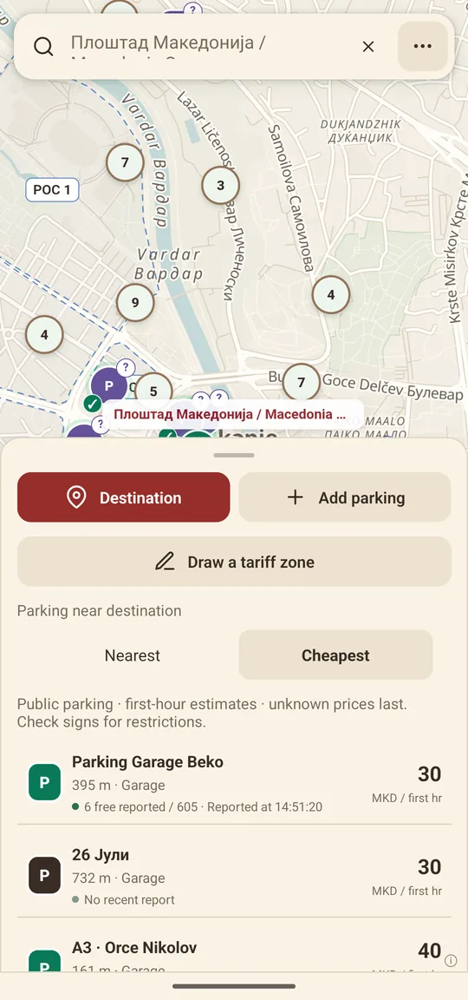
Free for Android
Soon on Google Play
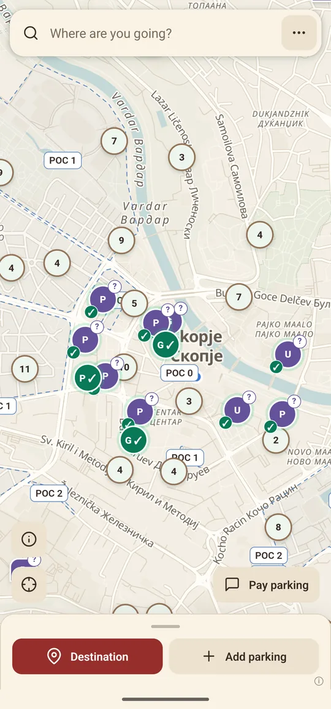
Parkino shows the car parks, garages and paid street zones around you, what they cost, and whether another driver just found space there.
You can also pay Gradski Parking and POC zones by SMS from the same screen.
Free, with no ads. Android only for now.
Why we made it
The information is out there, but it's split between operator websites, signs on poles and whatever a friend told you last week. Parkino puts it on one map.
Prices come from the operators' published tariffs and from drivers who park there. Free-space reports disappear after 15 minutes, so the map doesn't keep showing a car park that filled up an hour ago.
Most trips into the centre look like this. Parkino covers the part between leaving home and walking away from the car.
01
Search a street or a landmark, or drop a pin. You get the parking nearby, sorted by distance or by first-hour price.

02
Tap a pin for the tariff, the paying hours, the time limit and the latest report from someone who was there.
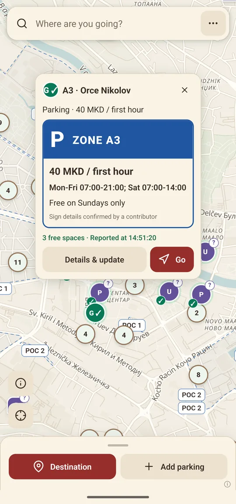
03
Choose your zone and Parkino writes the message for Gradski Parking or POC. You tick that the sign matches, then send it yourself.
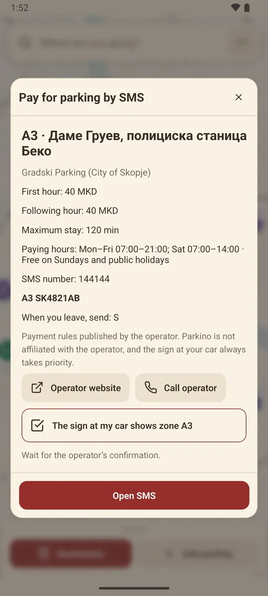
All of it works in Skopje today.
Stop at a car park for a few seconds and the app asks one question: any free spaces here? Your answer shows on the map for the next 15 minutes.
Zone codes, numbers and paying hours come from the operators' own rules. Sundays and public holidays show as free where they are, and you get a reminder 15 minutes before a zone's time limit.
Photograph a parking sign and the phone reads the prices and hours itself, in Macedonian, Albanian or English. You check every field before anything is shared, and the photo is deleted.
The streets of Skopje come inside the app, so the map still opens in an underground garage with no signal. The parking you've already loaded stays on the phone too.
If a car park isn't on the map, add it with a sign photo or by hand. You can draw its outline and say how many spaces it has.
Reports and new places earn points. They unlock app colours and an accent on the pins you added, and you never spend them.
Use it in Macedonian, Albanian, Turkish or English. There's a dark theme for the evening, or it can follow your phone.
Go hands the route to Google Maps or whichever navigation app you picked in settings.
Live reports
When your phone has been still at a car park for about ten seconds, Parkino asks if there were free spaces. Yes turns the pin green, No turns it red, and both fade after 15 minutes.
Nobody types anything while driving. The question only appears once you've stopped.
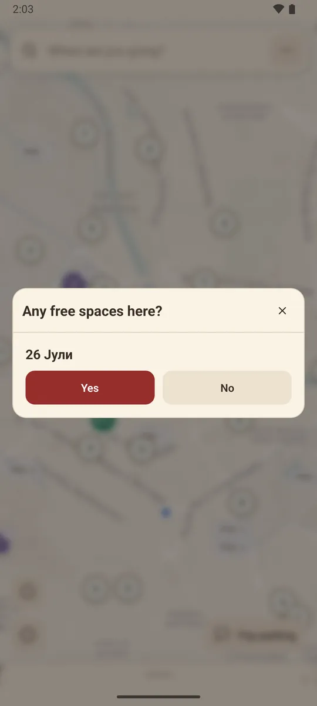
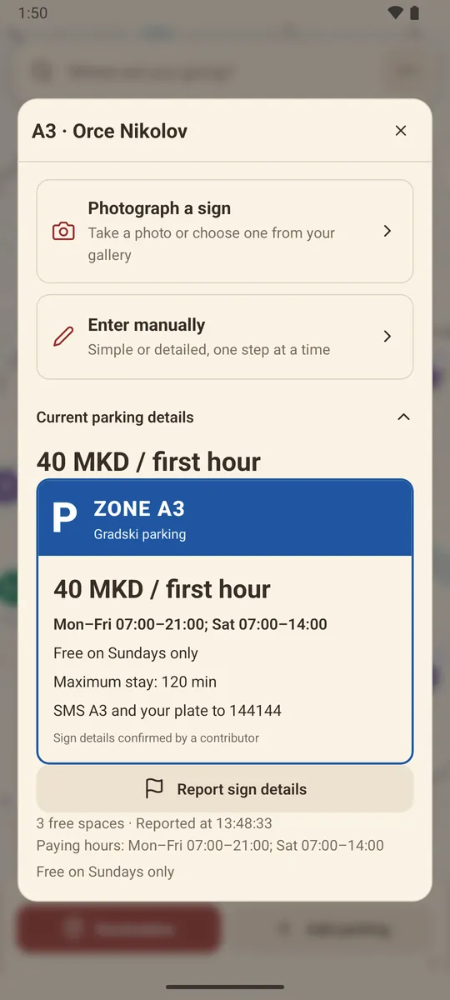
Signs
Point the camera at a parking sign. Text recognition runs on the phone, with no AI key and no internet needed for the reading itself, and turns the sign into a digital card with the price, the hours and the free days.
You compare it with the photo and fix anything it got wrong. Only the details you confirm are published, and the photo is deleted once you're done.
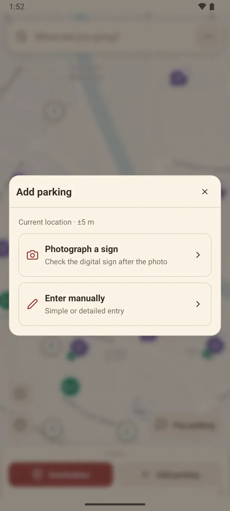
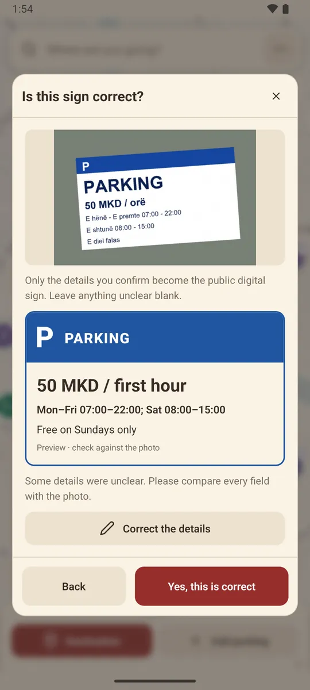
These are screenshots from the current Android build. Swipe or scroll sideways to see them all.
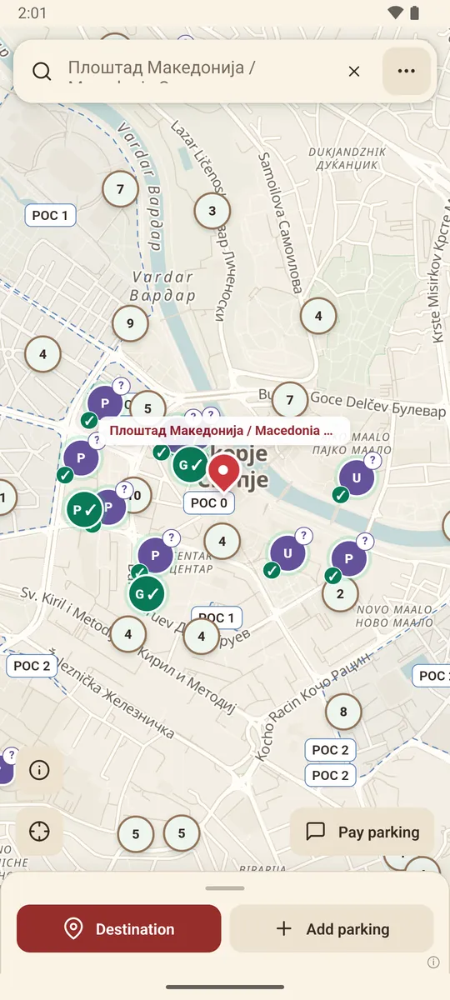
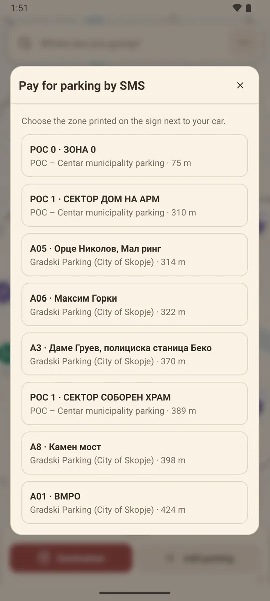
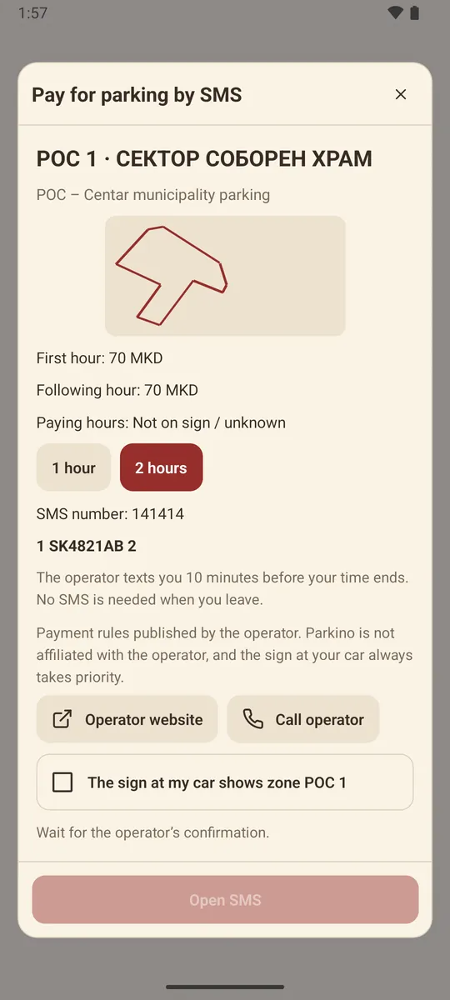
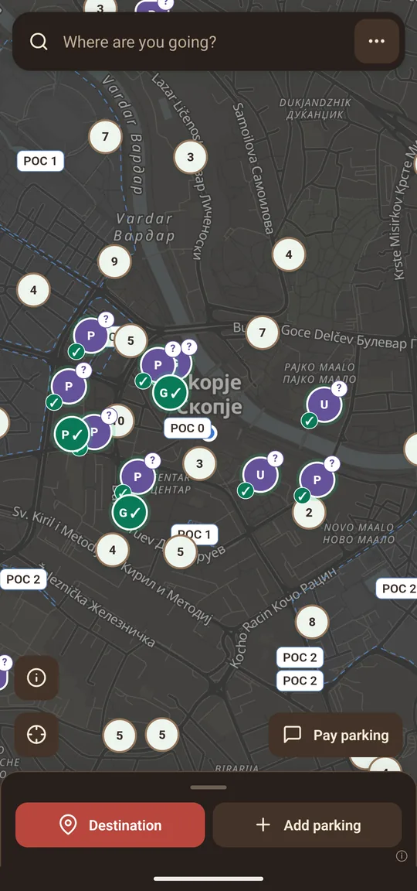
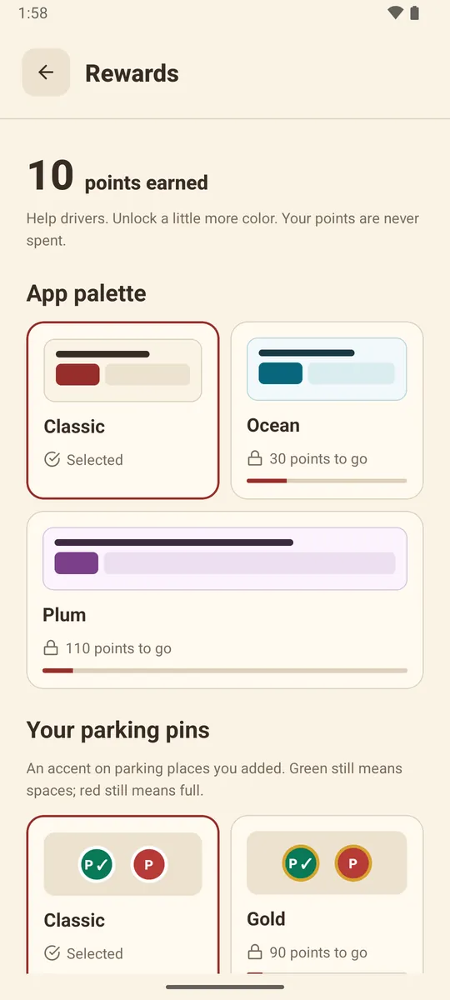
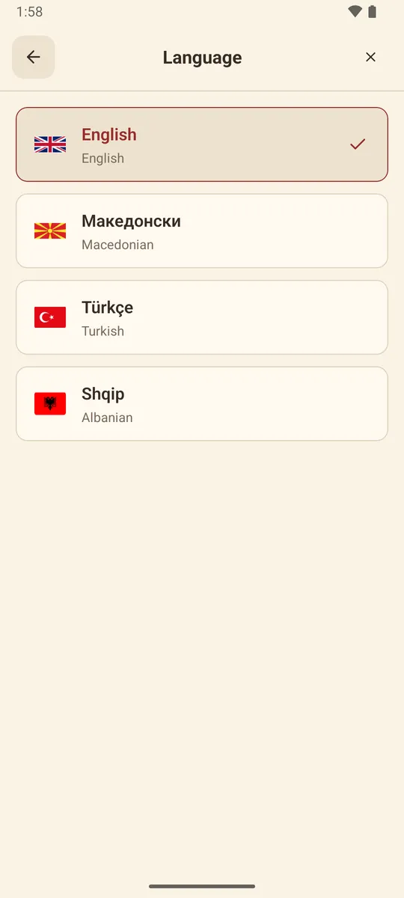
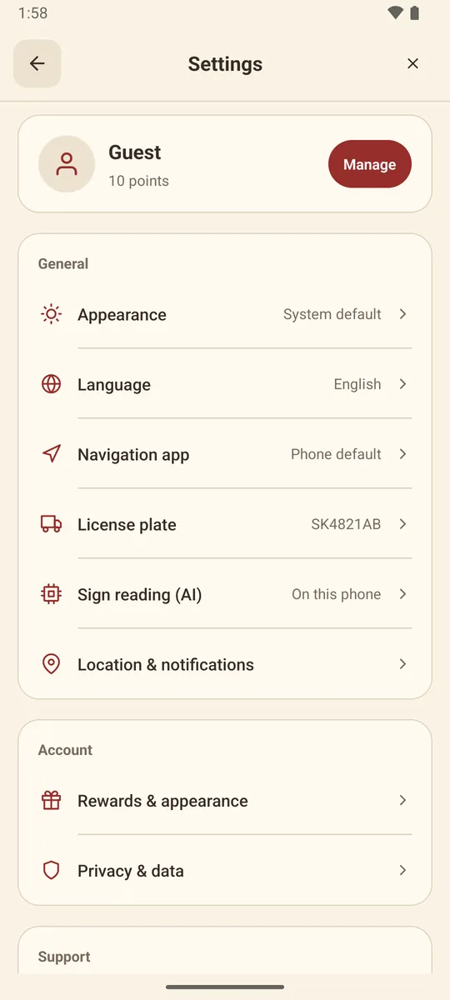
Your licence plate and your GPS history stay on the phone, and sign photos are never uploaded to Parkino. If you add your own Gemini or Groq key for hard-to-read signs, the photo goes straight to that provider and the key sits in the phone's secure storage.
The server keeps your username, the reports you send and the places you add. You can delete all of it from the app, or from this site with your username and password.
No. Parkino is independent and isn't affiliated with the City of Skopje, JP Gradski Parking or JP Parkinzi na Opshtina Centar. Payment rules come from what those operators publish, and the sign next to your car always takes priority.
The app is free. You still pay the parking operator for parking, and your mobile operator charges the usual price for the SMS.
It opens your messaging app with the right number and message already filled in. You press send, so nothing is ever paid without you seeing it. Wait for the operator's confirmation SMS before you walk away.
Android. The Google Play listing is on its way, and until then you can install the APK from this page.
Not yet. The map, the zones and the prices cover Skopje only.
You can start as a guest. Add a username and password if you want to keep your points and contributions after reinstalling or switching phones.
The APK is the same app that's going to Google Play. Android will ask you once to allow installs from your browser. When the Play Store listing goes live, switch to it for automatic updates.
The download link goes up here shortly.